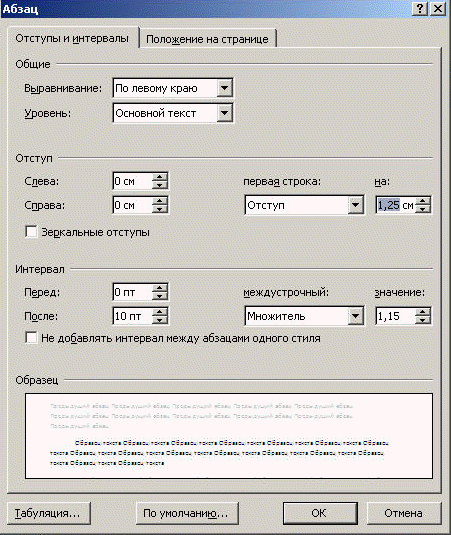

. В появившемся
диалоговом окне Абзац на вкладке Отступы и интервалы из
раскрывающегося списка Первая строка выберите Отступ; в поле
На: установите размер абзацного отступа.
. В появившемся
диалоговом окне Абзац на вкладке Отступы и интервалы из
раскрывающегося списка Первая строка выберите Отступ; в поле
На: установите размер абзацного отступа.Для установки точного значения абзацного отступа для выделенных абзацев на
вкладках Разметка страницы или Главная выберите команду Абзац
. В появившемся
диалоговом окне Абзац на вкладке Отступы и интервалы из
раскрывающегося списка Первая строка выберите Отступ; в поле
На: установите размер абзацного отступа.

Абзацный отступ также можно настроить при помощи линейки. Однако, этим допустимо пользоваться лишь тогда, когда не требуется установить точное значение отступа.
1 - левое поле; 2 - маркер абзацного отступа; 3 - маркер левой границы абзаца; 4 - маркер правой границы абзаца; 5 - правое поле.
Назад | Содержание | Вперед